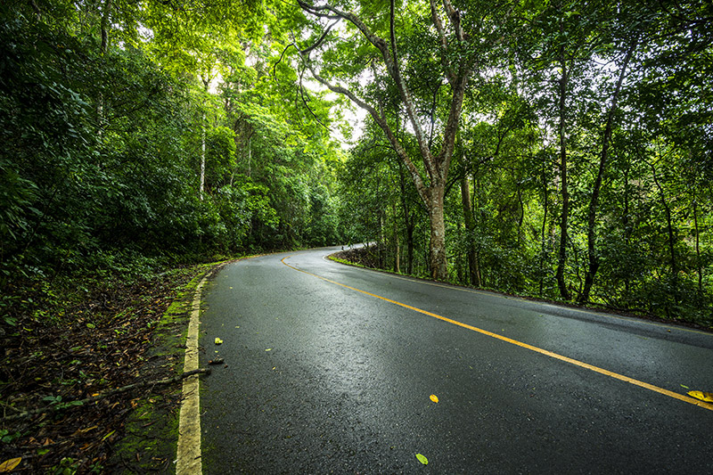
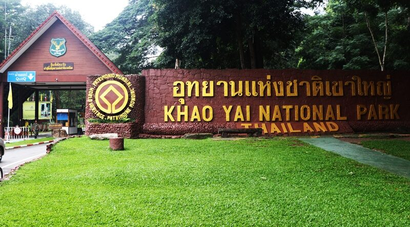
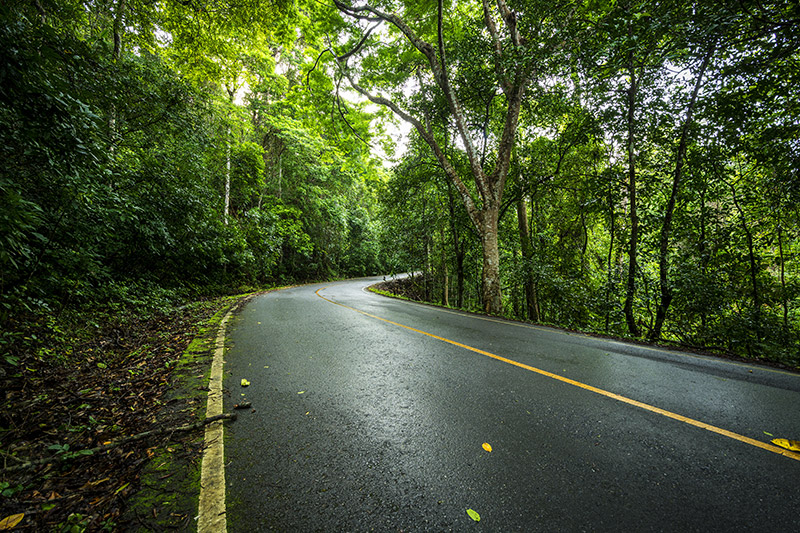
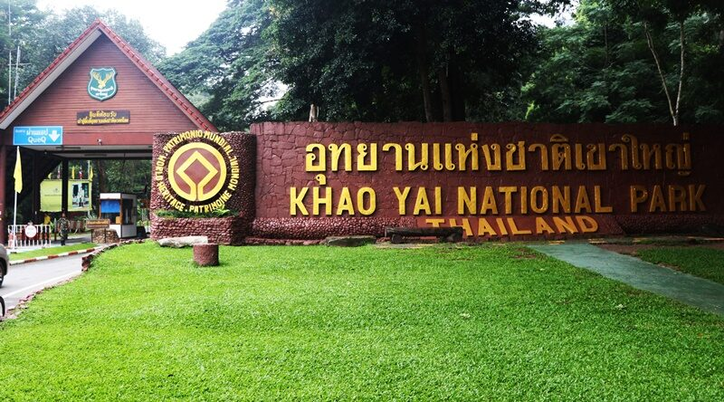
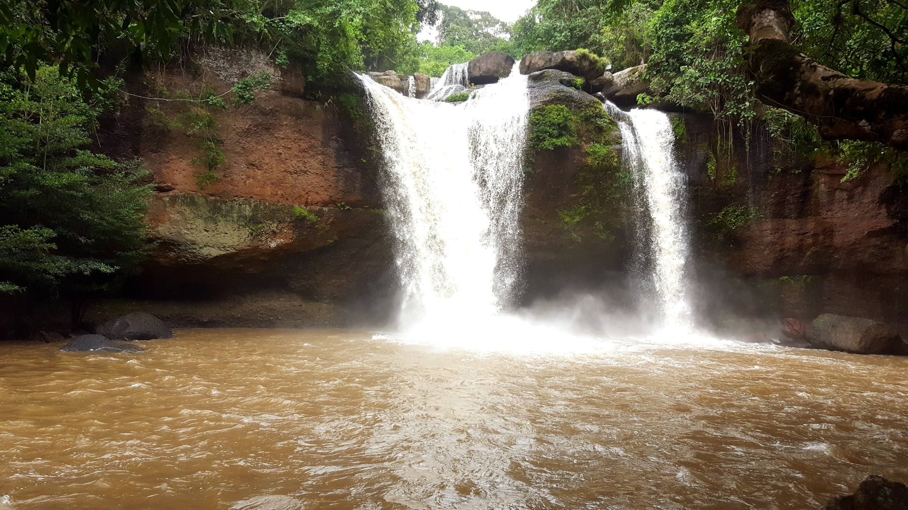
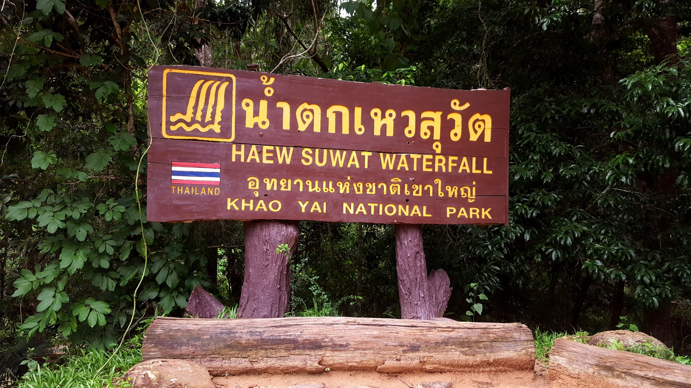
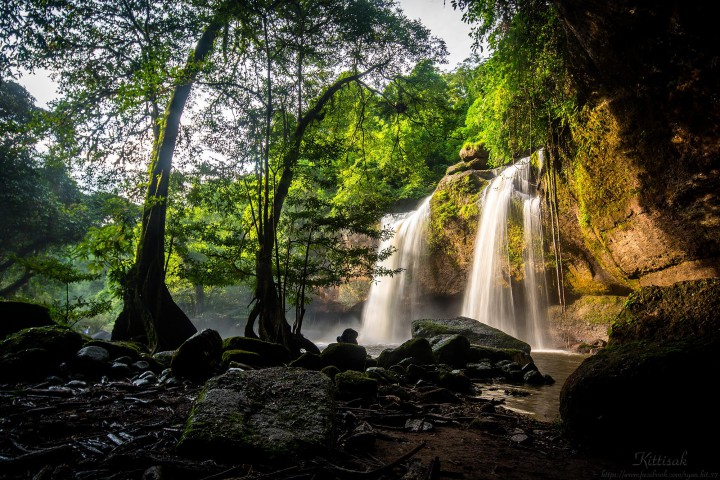
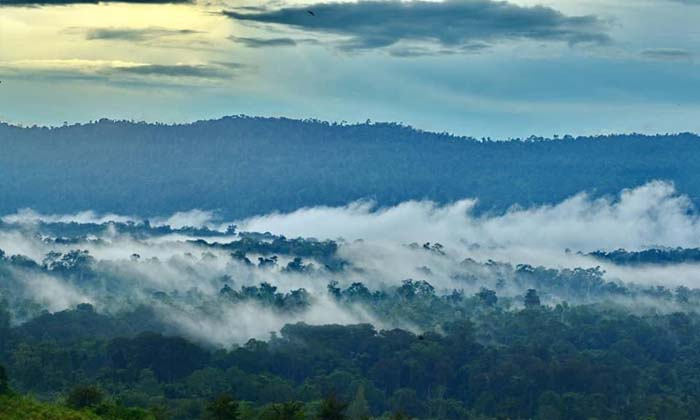
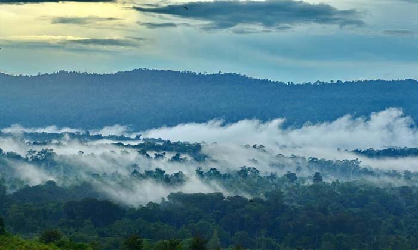

1.อุทยานแห่งชาติเขาใหญ่
ตั้งอยู่ในเขตพื้นที่ 11 อำเภอ ใน 4 จังหวัด ได้แก่ อำเภอปากช่อง อำเภอวังน้ำเขียว จังหวัดนครราชสีมา; อำเภอนาดี อำเภอกบินทร์บุรี อำเภอประจันตคาม
อำเภอเมืองปราจีนบุรี จังหวัดปราจีนบุรี; อำเภอปากพลี อำเภอบ้านนา อำเภอเมืองนครนายก จังหวัดนครนายก และอำเภอแก่งคอย อำเภอมวกเหล็ก จังหวัดสระบุรี เป็นอุทยานแห่งชาติแห่งแรกของไทย ได้รับการประกาศเป็นอุทยานแห่งชาติเมื่อวันที่ 18 กันยายน พ.ศ. 2505 และได้รับสมญานามว่าเป็น "อุทยานมรดกของกลุ่มประเทศอาเซียน"
 



2.น้ำตกเหวสุวัต
น้ำตกเหวสุวัตเป็นน้ำตกที่มีชื่อเสียงมากเป็นที่รู้จักของประชาชนทั่วไป ตั้งอยู่ที่ตำบลหมูสี อำเภอปากช่อง จังหวัดนครราชสีมา
ห่างจากที่ทำการอุทยานแห่งชาติทางด้านทิศตะวันออกประมาณ 13 กิโลเมตร ทางด้านปลายสุดของถนนธนะรัชต์ น้ำตกเหวสุวัต ซึ่งถือเป็นน้ำตกที่มีชื่อเสียงมากของอุทยานแห่งชาติ เป็นน้ำตกแห่งแรกของลำห้วยลำตะคอง น้ำตกเหวสุวัต มีระยะทาง 3 กิโลเมตร เนื่องจากน้ำตกเหวสุวัตเป็นน้ำตกที่เข้าถึงได้สะดวกและมีแอ่งน้ำขนาดใหญ่สามารถลงเล่นน้ำได้ จึงพบผู้ที่เข้ามาเล่นน้ำตก ถ่ายภาพ ดูนก ปิกนิก และศึกษาธรรมชาติเป็นจำนวนมาก



3.อุทยานแห่งชาติทับลาน
เป็นอุทยานแห่งชาติในภาคอีสานและภาคตะวันออก มีพื้นที่ครอบคลุมท้องที่อำเภอปักธงชัย อำเภอวังน้ำเขียว อำเภอครบุรี อำเภอเสิงสาง
จังหวัดนครราชสีมา และอำเภอนาดี จังหวัดปราจีนบุรี สภาพป่ามีความอุดมสมบูรณ์และมีป่าลานซึ่งหาดูได้ยากที่มีเฉพาะบางท้องที่เท่านั้น มีต้นลานขึ้นตามธรรมชาติ เป็นแหล่งกำเนิดของแม่น้ำลำธารต่าง ๆ และมีธรรมชาติที่สวยงาม เช่น หุบผา หน้าผา น้ำตก นับว่าเป็นอุทยานแห่งชาติที่มีพื้นที่มากเป็นอันดับสองของประเทศไทย รองจากอุทยานแห่งชาติแก่งกระจาน

 
